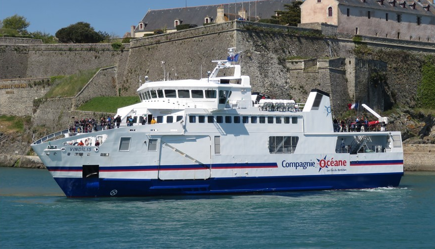

| Vindilis | Informations |
|---|---|
| Type | Ferry |
| Pavillon | France |
| Armateur propriétaire | Région Bretagne |
| Armateur gérant | Compagnie Océane |
| IMO number | 9165566 |
| Construit en | 1998 |
| Chantier | Constructions Mécaniques de Normandie |
| Tonnage brut | 1 299 ums |
| Capacité passagers | 462 |
| Propulsion | Diesel Wärtsilä |
| Longueur | 48 m |
| Largeur | 12,50 m |
| Puissance | 1 880 kW |
| Vitesse | 12,5 nœuds |


Pour revenir à la page d'acceuil, veuillez cliquer sur le bouton suivant
Retour vers l'acceuil